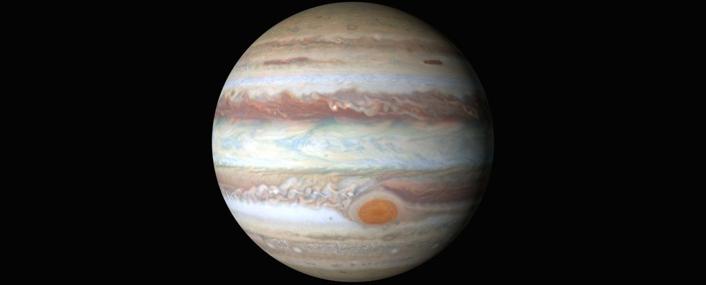
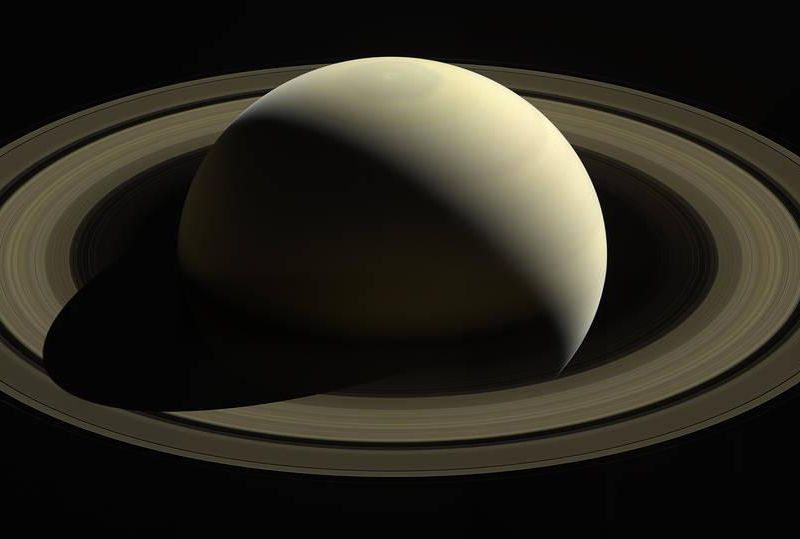

|  |  | |
|
|
| Planet Names | Jupiter | Saturn | Uranus | Neptune |
|---|---|---|---|---|
| Mass (kg) | 1.90 x 10^27 | 5.69 x 10^26 | 8.68 x 10^25 | 1.02 x 10^26 |
| Diameter (km) | 142,800 | 102,600 | 51,118 | 49528 |
| Mean Density (kg/m^3) | 1314 | 690 | 1290 | 1640 |
| Escape Velocity (m/s) | 59,500 | 35,600 | 21,300 | 23,300 |
| Distance from Sun | 5.20 AU | 9.54 AU | 19.19 AU | 30.07 AU |
| Rotation Period | 0.41 (9.8 Earth Hours) | 0.44 (10.2 Earth Hours) | 0.72 (17.9 Earth Hours) | 0.67 (19.1 Earth Hours) |
| Revolution Period | 11.86 (Earth Years) | 29.46 (Earth Years) | 84.0 (Earth Years) | 164.8 (Earth Years) |
| Obliquity | 3.08 | 26.7 | 97.9 | 1.77 |
Fun Fact: Jupiter was a failed star :(